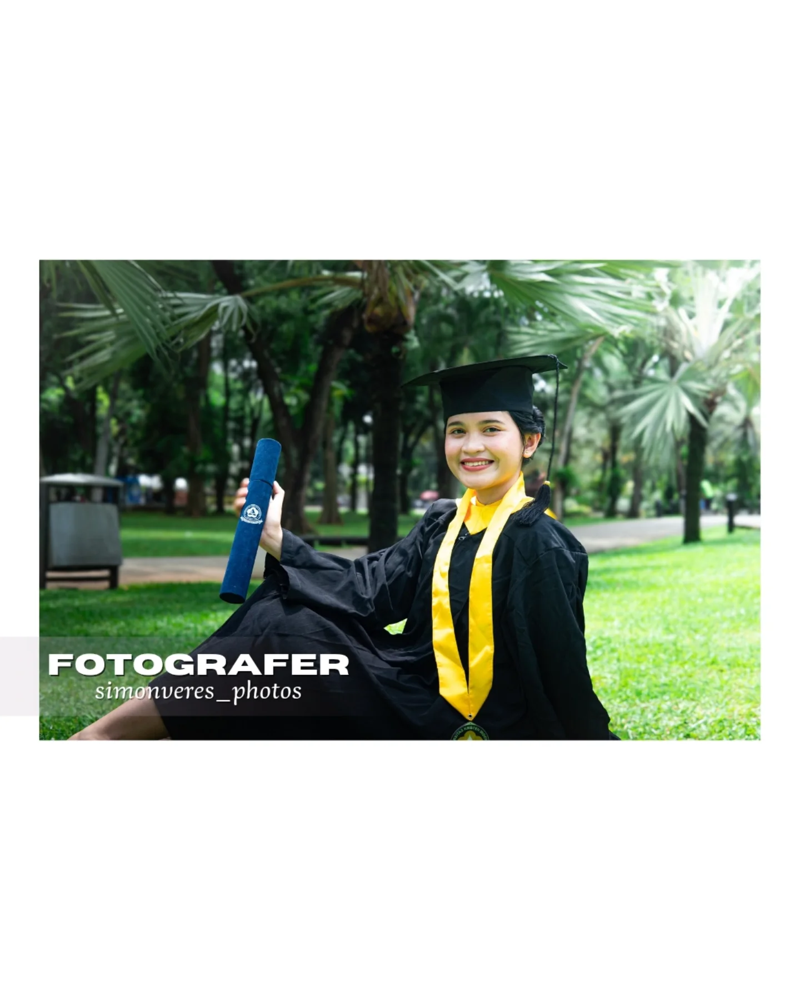
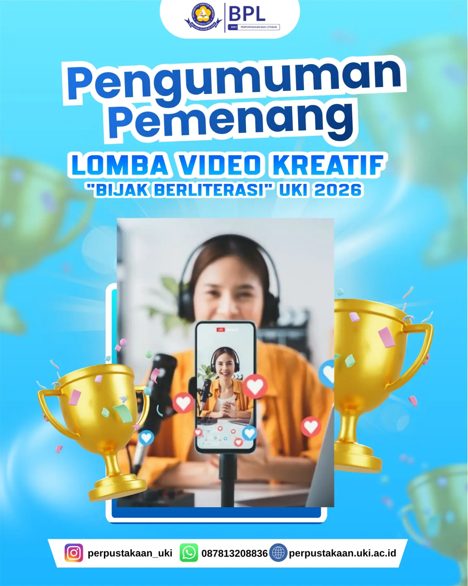

01 · WEBSITE / PROJECT 01
Company Profile Rental Kamera
Contoh company profile layanan rental kamera dengan ringkasan layanan dan jalur pemesanan.
Lihat detail layanan Website Tanya AI tentang websiteContoh karya di bawah ini dikelompokkan berdasarkan layanan utama agar mudah dibandingkan dan dipilih sebagai referensi.
Contoh company profile layanan rental kamera dengan ringkasan layanan dan jalur pemesanan.
Lihat detail layanan Website Tanya AI tentang website
Contoh situs portofolio personal untuk menampilkan profil, keahlian, pengalaman, dan karya dalam satu halaman.
Lihat detail Web Portofolio Tanya AI tentang website
Contoh CV berbahasa Inggris yang merangkum profil, pendidikan, pengalaman, dan pencapaian.
Lihat detail CV & Portfolio Tanya AI tentang CV & portfolio
Dokumentasi wisuda, acara, potret diri, produk, dan berbagai peristiwa penting.
Lihat detail Fotografi Tanya AI tentang fotografi
Video sorotan acara, video pendek, video promosi, konten media sosial, dan cerita visual.
Lihat detail Videografi Tanya AI tentang videografi
Poster, social media kit, konten Instagram, pitch deck, presentasi, dan aset digital.
Lihat detail Desain Kreatif Tanya AI tentang desain